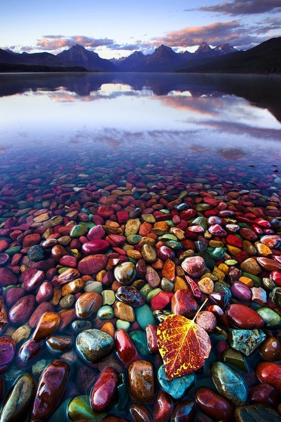
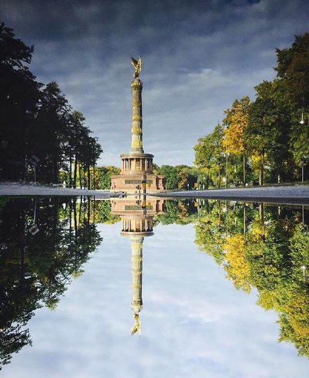

静静地，风在吹
照阳沐浴着大地
河流拥饶着环山
山的那头，郁树葱葱
飞瀑直下，燕歌萦绕
跌菪耳畔，久南复息
那便是山对水的承诺
树对大地的誓言
我是一洼清水
我是一洼清水
没有江海河流的容量
也没有他们的深度
他们可以用自己容纳污垢来苟活
我不能
因为我来自天上
于是
车轮压碎我的身体
血液泼洒在地上
任人践踏
阳光带着了我的魄魂
浅薄的人们以为看懂了什么
我以燃烧灵魂换来尊严
自然的礼遇
鸟儿对风的鸣颂
海阔天空，飞扬信仰
苍蓝天空下
夕阳缓缓起身，为风尘洗去尘埃
为宇宙凭添几分灵动
为大地投去温柔的一瞥
为心灵送去一份祥和的慰藉
哦，使信仰长成参天大树

红红的火，炙热的爱
那每一片红色枫叶上印着一个个爱情
蓝蓝的天，宽广的情
那每一条蓝色河流中流着一段段友情 绿绿的树，高大的爱
那每一颗绿色树影里刻着一家家亲情
黄黄的麦，沉淀的情
那每一株黄色麦穗中裹着一份份热情
紫色的梦，橙色阳光透过窗台，照亮了墙角的黑暗，在哭泣中抹去的泪，那盛开的白色蒲公英正随风飞舞。
河流
汪峰
这么多年我竟然一直在寻找
找那条流淌在心中的河流
我知道也许它不在任何地方
或是就在我心底最疼痛的故乡
究竟流多少泪才能停止哭泣
究竟回多少头才会看到天空
谁能告诉我那汹涌的孤独与渴望
是否就是我梦里永隔千里的河流
月亮这么僵彩虹也那么迷惘
我能做的只是不悲伤不仰望
总是在最好的时刻满怀悲凉
只因为生命注定在不羁中死亡
究竟受多少伤才能无视痛楚
究竟走多少路才会回到最初
谁能告诉我那奔腾的迷惘与骄傲
是否就是我心底永隔一世的河流
如同那火焰般绽放的花儿
我们被镌刻在这料峭的尘世
这世界上还有什么能比那些
清澈的灵魂无助的抽泣更悲伤
究竟流多少泪才能停止哭泣
究竟回多少头才会看到天空
谁能告诉我那汹涌的孤独与渴望
是否就是我梦里永隔千里的河流
究竟受多少伤才能无视痛楚
究竟走多少路才会回到最初
谁能告诉我那奔腾的迷惘与骄傲
是否就是我心底永隔一世的河流
是否就是我梦里永隔千里的河流
